Лаба 2 по КиДСВТ: как сделать самому
Вариант 20. Иди по шагам сверху вниз. Красные кружки с цифрами на картинках показывают, куда нажимать.
• g(x) = x⁵ ⊕ x² ⊕ 1, сумматоры
1 0 1 0 0• делимое
1001110001101011• для п. 1.3: генератор
1 0 1 0 0, анализатор 1 1 1 0 1
План: 0. Что такое регистр · 1. Примитивные полиномы · 2. Деление · 3. Самотестирование · 4. Отчёт
0. Что вообще происходит (2 минуты)
В Modius нарисован регистр: 5 ячеек Q1…Q5, в каждой 0 или 1. Нажатие «Выполнить» — это много тактов подряд. На каждом такте:
- всё сдвигается на одну ячейку вправо;
- число из Q5 «вылетает» и по нижнему проводу возвращается в Q1;
- если вылетела 1, ячейки, перед которыми стоит кружок ⊕, переворачиваются (0↔1).
Справа в таблице Modius показывает, что лежит в Q1…Q5 на каждом такте. Ты ничего не считаешь руками — программа считает сама, ты только расставляешь кружки ⊕, нажимаешь «Выполнить» и читаешь таблицу.
«Сумматоры 1 0 1 0 0» — это где стоят кружки ⊕: пять цифр для входов Q1…Q5. Первая цифра всегда 1 (это обратная связь в Q1). У варианта 20 кружок ⊕ должен стоять только перед Q3.
1. Пункт 1.1 — примитивные полиномы
Задача: найти, при каких расстановках ⊕ регистр проходит все 31 состояние, прежде чем повториться.
Шаг 1. Открой «Работу №4»
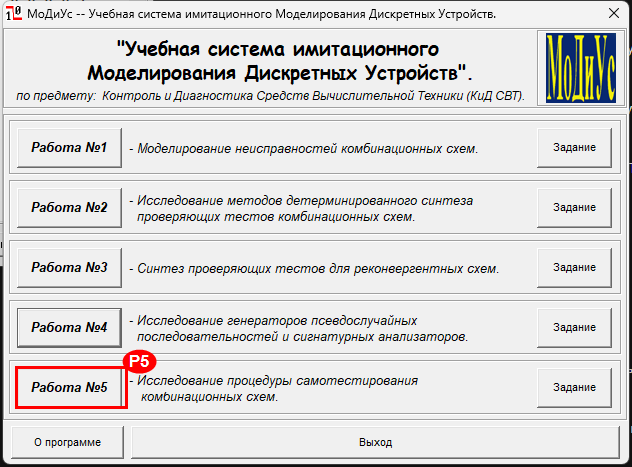
Шаг 2. Режим и кружки
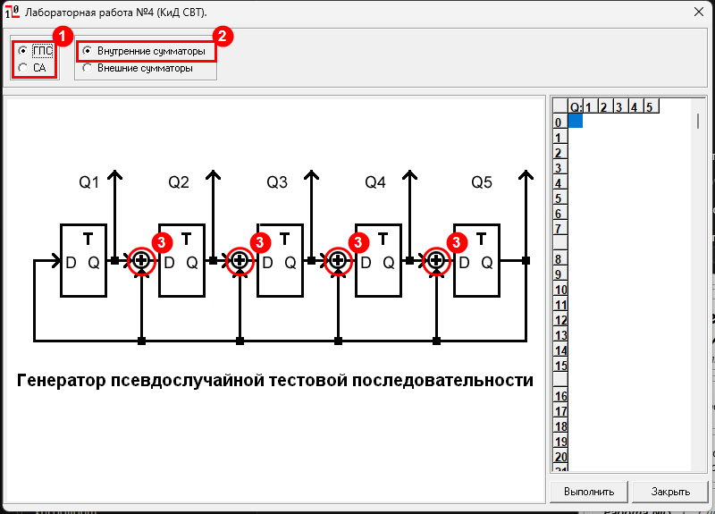
Шаг 3. Поставь свою комбинацию и нажми «Выполнить»
Для варианта 20 убери кружки перед Q2, Q4, Q5 — останется один кружок перед Q3. Нажми «Выполнить» 4.
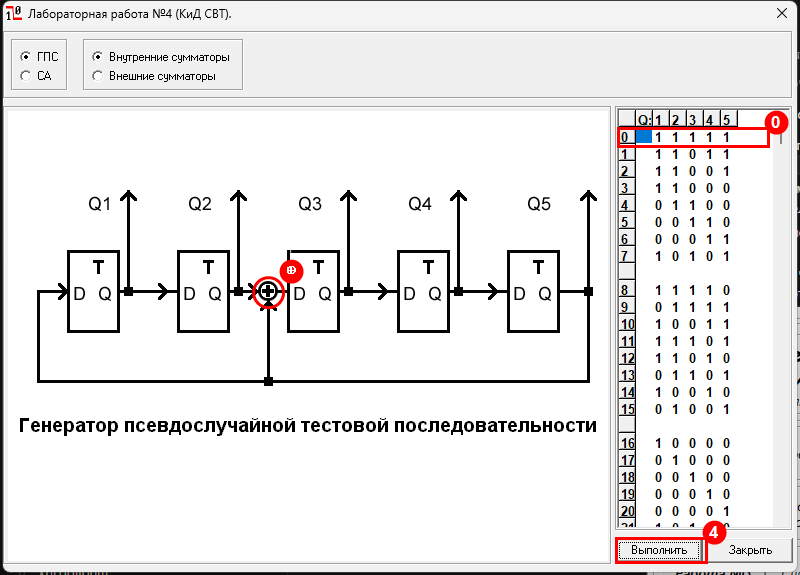
11111.Шаг 4. Найди период
Кликни по таблице и нажми на клавиатуре PageDown, чтобы увидеть нижние строки. Ищи, на каком такте снова появится 1 1 1 1 1.
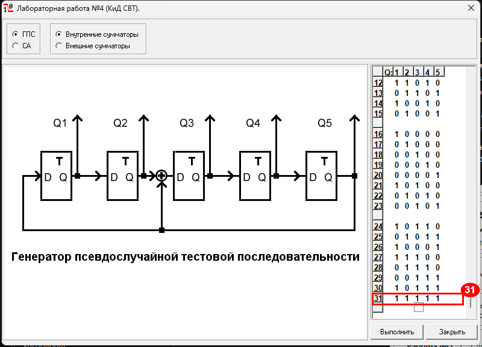
Шаг 5. Повтори для всех 16 комбинаций
Кружков 4 (перед Q2, Q3, Q4, Q5), каждый есть или нет — всего 16 вариантов. Для каждого: расставил кружки → «Выполнить» → нашёл такт, где снова 11111 → записал в таблицу.
| D1 D2 D3 D4 D5 | Кружки ⊕ перед | Период |
|---|---|---|
| 1 0 0 0 0 | нигде | 1 |
| 1 0 0 0 1 | Q5 | 21 |
| 1 0 0 1 0 | Q4 | 31 |
| 1 0 0 1 1 | Q4, Q5 | 14 |
| 1 0 1 0 0 | Q3 | 31 |
| 1 0 1 0 1 | Q3, Q5 | 15 |
| 1 0 1 1 0 | Q3, Q4 | 12 |
| 1 0 1 1 1 | Q3, Q4, Q5 | 31 |
| 1 1 0 0 0 | Q2 | 21 |
| 1 1 0 0 1 | Q2, Q5 | 8 |
| 1 1 0 1 0 | Q2, Q4 | 15 |
| 1 1 0 1 1 | Q2, Q4, Q5 | 31 |
| 1 1 1 0 0 | Q2, Q3 | 14 |
| 1 1 1 0 1 | Q2, Q3, Q5 | 31 |
| 1 1 1 1 0 | Q2, Q3, Q4 | 31 |
| 1 1 1 1 1 | Q2, Q3, Q4, Q5 | 6 |
2. Пункт 1.2 — сигнатура и деление
Задача: показать, что анализатор выдаёт остаток от деления твоей последовательности на g(x).
Шаг 1. Раздели на бумаге
Делитель — это g(x) в виде нулей и единиц: x⁵ ⊕ x² ⊕ 1 → 100101. Делим «столбиком», но вместо вычитания — XOR (одинаковые цифры дают 0, разные дают 1):
1001110001101011
100101 ← подписали под первой 1, сделали XOR
------
0000100001 ← нули впереди, сносим цифры до следующей 1
100101 ← XOR
------
000100101
100101 ← XOR
------
000000011 ← цифры кончились: последние 5 = остаток 00011
Шаг 2. Включи режим СА и введи делимое
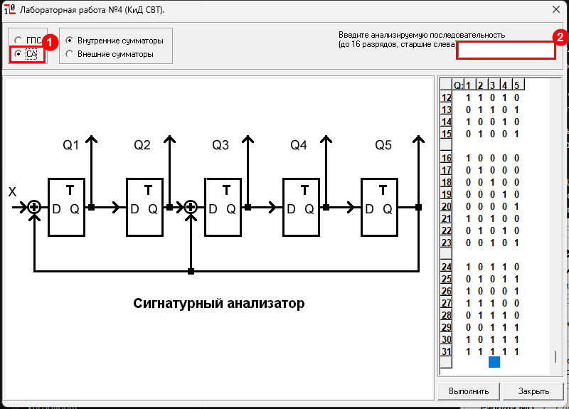
Шаг 3. «Выполнить» и смотри такт 16
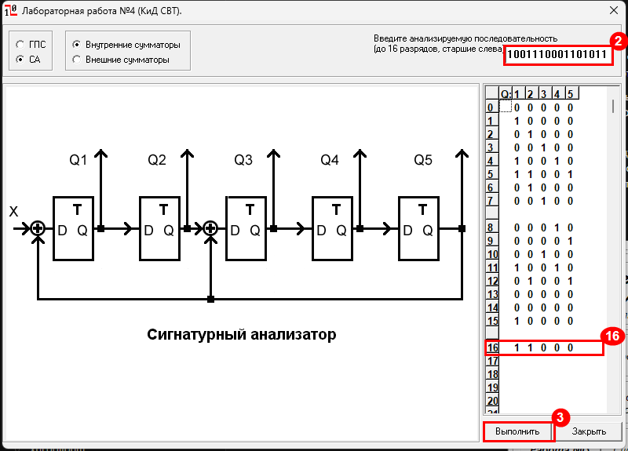
1 1 0 0 0. 📸 Скриншот.
Почему 11000, а не 00011? Это одно и то же, только задом наперёд: в Q1 хранится младшая цифра остатка, в Q5 — старшая.
Шаг 4. Два опыта (каждый — со скриншотом)
| Что ввести | Что будет на такте 16 | Что это значит |
|---|---|---|
| 1001110001101010 | 01000 | поменял 1 цифру → сигнатура изменилась → ошибка поймана |
| 1001110001001110 | 11000 | прибавил 100101 к концу → сигнатура та же → ошибка не поймана |
Как получилась вторая строка: к последним 6 цифрам исходного делимого прибавили (XOR) делитель 100101: 101011 ⊕ 100101 = 001110.
3. Пункт 1.3 — самотестирование схемы
Задача: «поломать» схему 10 разными способами и посмотреть, на каком наборе каждая поломка становится заметна.
Шаг 1. Открой «Работу №5»
Закрой окно «Работы №4» кнопкой «Закрыть» и в главном окне нажми Р5. (Если «Работа №5» не открывается — значит, ещё открыто окно «Работы №4».)
Шаг 2. Настрой схему
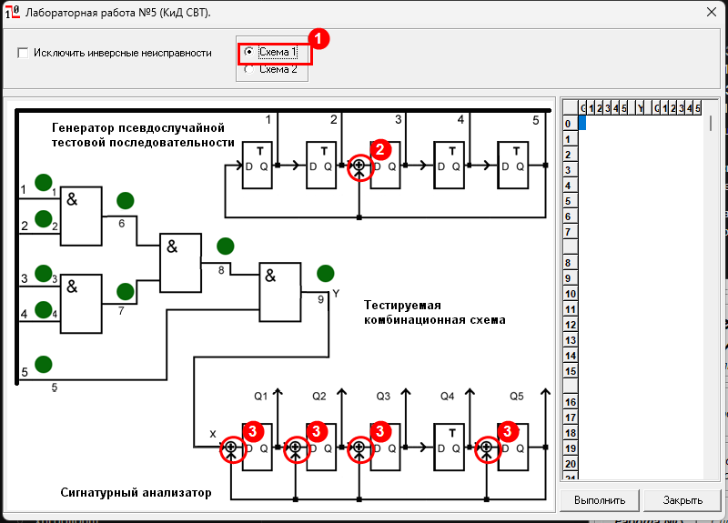
Шаг 3. Запусти исправную схему — это эталон
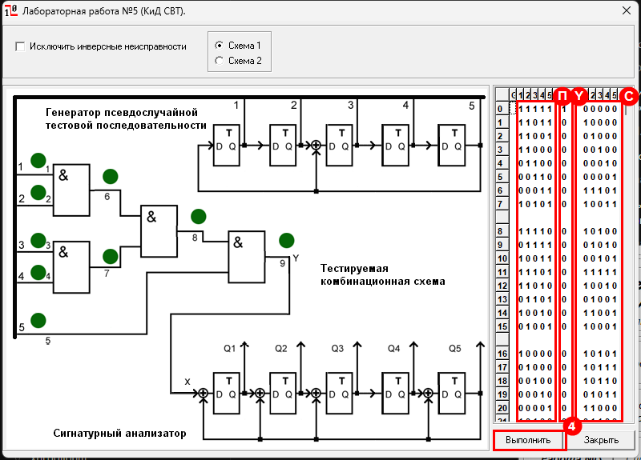
Нажми PageDown и посмотри конец таблицы:
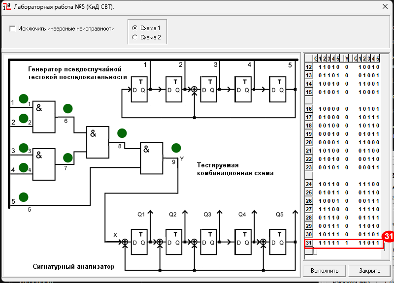
11011. 📸 Скриншоты обеих половин таблицы.Запиши эталонную сигнатуру в строках 7, 15, 23, 31 — с ними потом сравнивать.
Шаг 4. Как ставить поломку
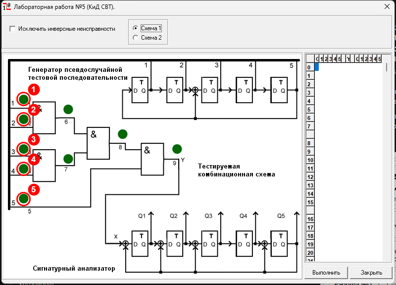
Каждый клик по кружку меняет его по кругу:
🟢 исправно → «0» → «1» → «In» → 🟢 исправно
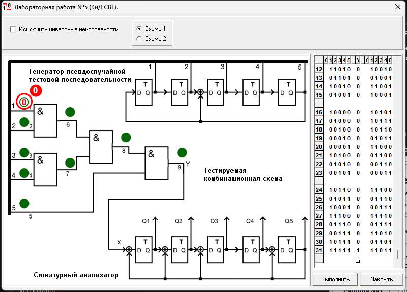
Шаг 5. Прогони все 10 поломок
Для каждого входа 1…5 по очереди:
- 1 клик по кружку → стало «0» → «Выполнить» → выпиши сигнатуры в строках 7, 15, 23, 31 → 📸;
- ещё 1 клик → стало «1» → «Выполнить» → выпиши → 📸;
- ещё 2 клика → кружок снова зелёный.
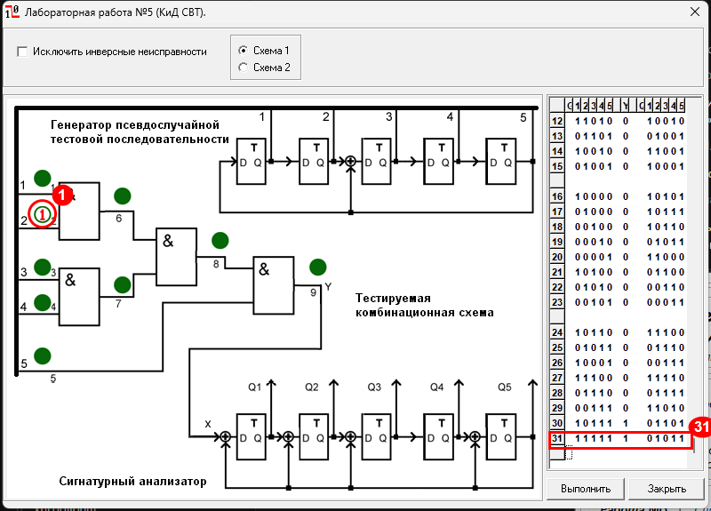
01011 — не равна эталону 11011, значит поломка обнаружена.Шаг 6. Заполни таблицу и посчитай
Поломка обнаружена, если её сигнатура в строке не равна эталону в той же строке. Должно получиться так:
| Строка | Эталон | 1/0 | 1/1 | 2/0 | 2/1 | 3/0 | 3/1 | 4/0 | 4/1 | 5/0 | 5/1 |
|---|---|---|---|---|---|---|---|---|---|---|---|
| 7 | 10011 | 00000 | 10011 | 00000 | 10011 | 00000 | 01110 | 00000 | 10011 | 00000 | 10011 |
| 15 | 10001 | 00000 | 01100 | 00000 | 10001 | 00000 | 01000 | 00000 | 10011 | 00000 | 00010 |
| 23 | 00011 | 00000 | 11010 | 00000 | 00011 | 00000 | 00101 | 00000 | 10001 | 00000 | 10010 |
| 31 | 11011 | 00000 | 11101 | 00000 | 01011 | 00000 | 10110 | 00000 | 00011 | 00000 | 11000 |
Считаем, сколько из 10 отличается от эталона, и Kп = обнаружено / 10:
| Наборов | Обнаружено | Kп |
|---|---|---|
| 7 | 6 из 10 | 0,6 |
| 15 | 9 из 10 | 0,9 |
| 23 | 9 из 10 | 0,9 |
| 31 | 10 из 10 | 1,0 |
Почему так (это спросят на защите)
Схема 1 — это четыре элемента «И». «И» выдаёт 1, только если все входы равны 1. Значит, выход Y = 1 только на наборе 11111.
- Поломки «x/0» (вход залип в 0): «И» с нулём всегда даёт 0 → выход всегда 0 → сигнатура всегда
00000. Ловятся сразу, но все пять одинаковые — не понять, какой вход сломан. - Поломки «x/1» (вход залип в 1): заметны только на одном наборе — где этот вход 0, а остальные 1. Для «2/1» это набор
10111, а он идёт 30-м. Поэтому всё ловится только к 31-му набору.
4. Что положить в отчёт
- Титульный лист и задание своего варианта.
- 1.1 — таблица 16 комбинаций + скриншот своего генератора (такт 31 = 11111).
- 1.2 — деление столбиком, скриншот такта 16, два опыта со скриншотами, вывод.
- 1.3 — скриншоты схемы и эталона, таблица сигнатур, таблица Kп, график, окно = 31.
- Выводы — по абзацу на каждый пункт.
Готовый отчёт с этими же данными уже лежит в файле ЛР2_КиДСВТ_Вариант20_Отчёт.docx — можно сверяться с ним.